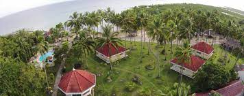

Back to Map
BOGO CITY

Sipaway Island

Whispering Palms Island

La Vista Highlands Mountain
Description:
San Carlos, officially the City of San Carlos (Cebuano: Dakbayan sa San Carlos;
Hiligaynon: Dakbanwa/Syudad sang San Carlos; Filipino: Lungsod ng San Carlos),
is a 2nd class component city in the province of Negros Occidental, Philippines.
According to the 2020 census, it has a population of 132,650 people.
The municipality's status was elevated into a city on July 1, 1960, per Republic Act No. 2643,
approved on June 18, 1960,[5] and Presidential Proclamation No. 685 s. 1960.